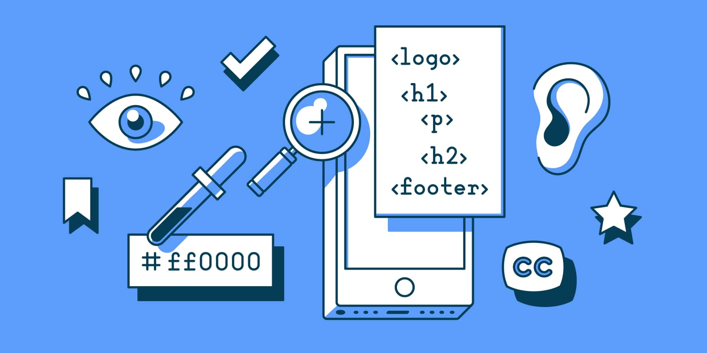

Web Content Accessibility Guidelines (WCAG) är en samling riktlinjer för att öka
tillgängligheten på internet för användare med funktionssvårigheter. Framförallt är riktlinjerna
fokuserade kring information såsom texter, bilder, ljud, kod och taggning som definierar
strukturella objekt samt presentation av innehåll i olika former. Det kan exempelvis handla
om att erbjuda textalternativ för visuella element eller att göra det enklare för besökaren på
webbsidan att lyssna på sidans innehåll istället för att läsa det visuellt.
Den inledande proccesen handlar om att ta reda på webbplatsens syfte och mål, därefter får man
sedan värdera hur kompitabellt informationsinnehållet är i förhållande till WCAG. Arbetet sker
i en dialog mellan kund och leverantör och kräver en strukturerad process för att inte missa
viktiga detaljer. Generellt ska svenska myndigheter följa nivå AA, alltså den näst högsta nivån
av WCAG. Här är tre exempel på några av dem kraven som måste uppfyllas:
Innehåll ska kunna presenteras utan att information eller funktionalitet går förlorad. Du ska kunna se och läsa sidans innehåll på en 320 x 256 pixlars skärm, vilket motsvarar ungefär bredden på en iPhone 5. Hemsidan ska inte heller behöva en horisontell skroll för att presentera allt innehåll. Dock finns det undantag för innehåll som kartor, diagram och spel.
Grafiska object, så som knappar och andra kontroller, som är nödvändiga för att förstå innehåll eller funktionalitet måste ha ett minimum kontrastvärde mot omgivande färger (minst 4,5:1). Det finns en rad olika verktyg man kan använda för att testa kontrasten på sin hemsida eller app. Vill man däremot säkerställa att en hemsida eller app uppfyller kraven krävs en mer omfattande analys.
För att sidans uttal ska ske korrekt i skärmläsaren så krävs det att sidans språk anges i kod. Har man inte gjort detta korrekt så kan, till exempel en rösttjänst, inte tyda vad som står på ens hemsida eller app.